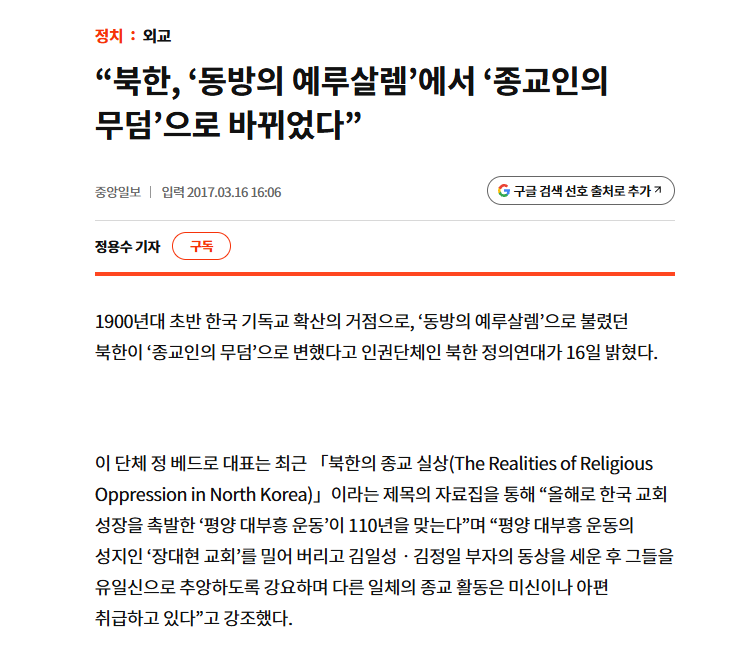
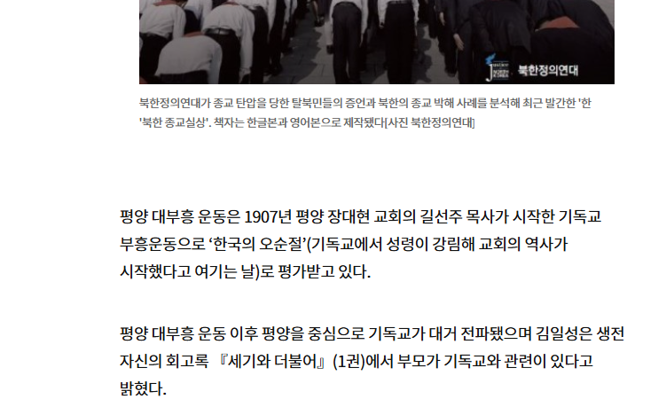
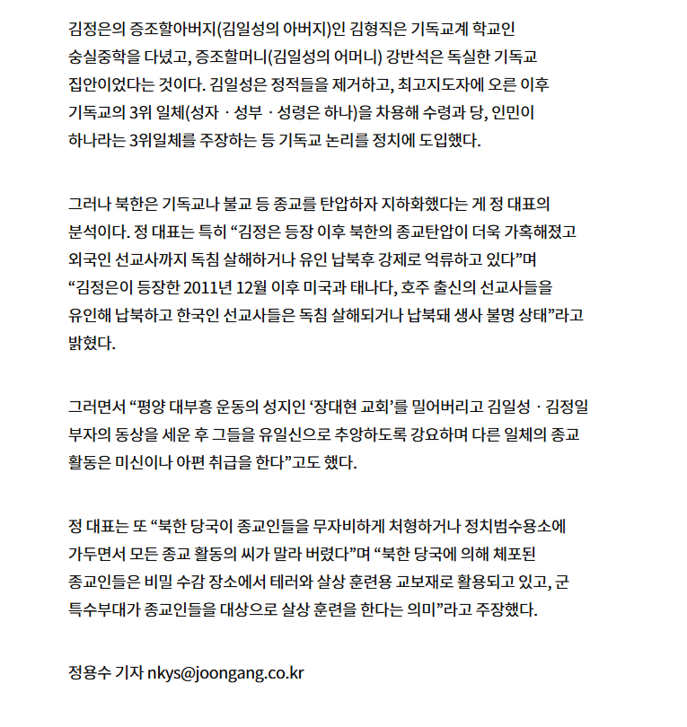

https://www.joongang.co.kr/article/21376947
동방의 작은나라에서 선교사를 보내 달라고 하고
기독교가 갑자기 부흥하면서
동방 에서 가장 홀리한 도시가 된 평양
동방 에서 종교가 가장 탄압받는 도시로 바뀐 평양
남쪽에는 조선의 모스크바 였다가
지금은 보수의 심장이되어버린 대구 가 있지



https://www.joongang.co.kr/article/21376947
동방의 작은나라에서 선교사를 보내 달라고 하고
기독교가 갑자기 부흥하면서
동방 에서 가장 홀리한 도시가 된 평양
동방 에서 종교가 가장 탄압받는 도시로 바뀐 평양
남쪽에는 조선의 모스크바 였다가
지금은 보수의 심장이되어버린 대구 가 있지
현대사회에서 종교가 어떤 취급을 받는지 생각하면 ㅋㅋㅋ
예수 애비 보시기에 평양 신도들 지옥처럼 사는 게 보기 좋으신갑지
그 샘물교회 뭐시기들 보내줘야겠네
근데 먹고살만하면 종교가 설자리를 잃을 수밖에 없지않나?
과거엔 종교가 복지의 사각지대쪽을 좀 더 보듬어주긴 했지만 현재는 국가가 다 해주잖아 우리나라 같은 경우는.
????? 여전히 종교계에서 복지 사각지대에 쓰는 돈 어마어마함
상대적인 얘기긴 함.
과거엔 복지 사각지대가 넓었다면 요샌 많이 줄어들었다는 얘기.
지금도당장 규모있는봉사활동 나가봐 거의다 종교계 특히 개신교계열이 압도적임
과거엔 우리나라 경제가 그닥 발전을 못해서 종교계에 도움을 받아야되는 사람이 많았다면.
요새는 평균적으로 잘 살아서 그런 사람들이 많이 없어졌잖아.
그러니까 종교의 영향력도 우리나라 내에서 줄어들고 실제로 무교비율도 늘어나는거라고 보는거.
지금도 종교계 무료봉사로 돌아가는 복지가 상당함
그렇긴 하겠지..
윗댓말대로 복지쪽에서 종교가 엄청 큰 몫을 차지함
시골 이야기도 아니고 당장 서울 내에만해도 종교시설이 만든 복지관을 구나 시에서 공인해줘서 공익배치도 받고 하는 복지관들 꽤 있음
이건 내가 몰랐네.
근데 결국 국가가 비용 인력을 대는거 아닌가 이 케이스에서는.
공익이 뭔지 모름?
공익요원을 배치 하는건 국가잖아..
국가의 자원에서 할당하는거로 보는거지..
엔터사에 정부 지원 좀 하면 한류가 국책사업이 되나? 아니자너
국가가 극히 일부의 인력과 비용을 지원하는 정도이지
복지관 내 대부분 비용과 인력은 종교단체가 담당함
정부 지원비율이 압도적 아닌가? 싶긴한데.
우리나라에서 종교가 국가보다 복지예산과 인력이 더 클 수 있나.. 우리나라 체급이 그정도가 아닌데.
ㄹㅇ 몰랐는데 대구가 초초초빨간맛이었더라
대구는 왜
지금은 보수성체니까..
그 빨간맛이 아니라 윗동네 빨간맛ㅋㅋ
요새 빨간맛이 두개라 헷갈려요
전혀 정반대인데 같은 색이라
부산 마산 행님들도 명함 못내미는 동네였제
종교탄압은 정답임
사이비 말고는 그래도 긍정적인 영향도 있어서
탄압까지는 좀.. 아닌거같은데
샘물교회분들 파견 시급합니다 빨리요
서비스로 편도 잠입비용은 국비부담해주자
비겁한 변명입니다!
이건 기독교의 명암을 떠나서 안타까운 일임
그런데 종교와 북한만 나오면
사람의 마음을 잃어버린 듯한 반응이 나옴
신의 이름으로 무고한 사람을 학살한 사건이 한국에도 있으니까
아이러니하지만 종교 밀어내고 없애려는 행위 자체도 꽤나 종교적이야...
오래전 유물론 유행할 때도 이미 나온 이야기지만
커뮤에 사실상 무신론을 종교로 믿는 수준인 애들 많음.
무교는 무종교인건데 무신론은 그 자체로 하나의 종교에 가깝다고 봄
ㅋㅋㅋ 북한 얘기에 뜬금없이 대구는 왜?
동방의 예루살렘 -> 한반도 유물론 성지
조선의 모스크바 -> 한반도 보수의 성지
비슷한 구도라
동학=천도교 도 신도의 절반정도가 북한에 있었는데 분단 되면서 다 잃어서 지금은 원불교에도 밀린다더라
동학의 어두운 면을 보면 그냥 사이비던데
사이비는 양반(?)이고 6.25 이후 교주(천도교에서는 교령으로 부름)가 둘이나 월북함...
신도가 많아서 미친놈들도 많아요 라고 변명도 힘들고 기독교처럼 종파가 많아서 관리가 안되요도 아닌
교주가 둘이나 월북 했으니 이걸로 또 이미지 조졌음
종교얘기하다가 정치로 빠지노 ㅋㅋ
그야 북한 정치가 주체사상이라는 신정체제니까 다른 종교를 다 탄압하는거지
백두혈통을 섬기는, 섬겨야만하고 다른걸 섬기면 죽여버리는 가장 종교적인 곳
평양 못살겠다면서 나온 기독교인들이 제주에서 한 짓 생각하면 뭐